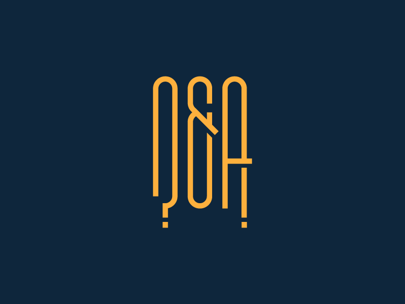

Interview Questions & Answers



The technical interview is unlike any other job interview: it’s a specialized, rigorous process that tests your coding skills, problem-solving abilities, and personality.
But even though interviewing for a tech job is intimidating (with whiteboard challenges, remote coding challenges, and even full days of onsite interviews sometimes), it’s a lot easier when you know what to expect and are well-prepared. That's why I wanted to create an epic, comprehensive guide to technical interviews and coding interview preparation for tech newbies! In the guide, you'll learn how to ace a technical interview even if it’s your first one!
Unlike other types of interviews, tech interviews involve challenges and assignments. They're more like an exam than a typical question-and-answer interview. Like the phrase “Show, don't tell,” you have to prove that you have the skills required to do the job, rather than just tell the interviewer that you have them. Contrary to popular belief, the purpose of the technical interview is not to trick you with riddles, brain teasers, or impossible questions. Instead, it’s to see how you tackle real-world problems–like the ones you might be facing once you have the job!